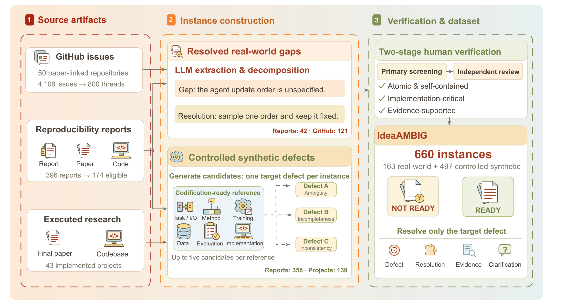

Assess readiness
Does the specification provide enough information for faithful implementation?
SpecificationREADY / NOT_READY + rationale
Macro-F1
Research ideas. Implementation-critical details.
1 Yale University2 University of Maryland, College Park3 TCS Research
† Corresponding author
The question before the code
A research idea can be novel and scientifically plausible while still leaving the core method underdetermined.
Codification readiness asks whether a competent implementer or coding agent can build a faithful initial implementation without inventing unsupported assumptions about the core method.
IdeaAMBIG separates three capabilities: assessing readiness, discovering the unresolved implementation decision, and formulating a clarification action once that decision is known.
The benchmark
Every main-benchmark instance isolates one atomic defect and pairs an underspecified input with a resolved reference.
Does the specification provide enough information for faithful implementation?
Macro-F1
Which method-defining decision is unresolved, and what kind of defect is it?
Macro Defect Recovery Rate
Given the annotated defect, what question or evidence would resolve it?
Macro Clarification Action Success Rate
Real-world gaps are reconstructed from resolved issues and reproducibility reports. Synthetic instances alter a single method-defining detail in a codification-ready reference.

121 GitHub issues · 42 reproducibility reports
358 reproducibility reports · 139 executed research trajectories
A shared vocabulary
Taxonomy labels describe the defect; the target description identifies the specific unresolved decision.
Ambiguous Definition
Ambiguous Procedure
Missing Method Procedure
Missing Model Structure
Missing Data Specification
Missing Configuration Protocol
Missing Evaluation Specification
Conflicting Objective
Conflicting Model Design
Conflicting Formal Definition
Inside the dataset
Explore six released benchmark instances, one per defect type and subset. The panels show gold annotations, not live model predictions.
The central finding
Models are better at acting on a known blocker than discovering it from the specification alone.
In a controlled comparison with GPT-5.6-Sol on all 163 real-world instances, providing the annotated blocker raises clarification success by 67.0 percentage points.
Same model, output schema, decoding settings, and evaluation protocol. Both bars measure Macro-CAS.
13-model evaluation
Task 1: 100 READY + 100 NOT_READY specifications. Tasks 2–3: 163 real-world instances.
| Model |
|---|
Click a metric to sort. Best scores are bold. Task 3 receives the annotated defect. Semantic and rubric-based evaluation uses Claude Opus 4.8, validated against adjudicated human annotations.
From clarification to implementation
With gold resolutions supplied, clarification-assisted generation improves both specification readiness and executable code.
14% to 98%
50 real-world instances · blinded human evaluation30% to 90%
20 controlled instances · bounded componentsThese studies measure the utility of successful clarification under oracle conditions: the annotated defect and gold resolution are provided. They are separate from end-to-end agent performance.
Open research
The benchmark and construction and evaluation code are available on GitHub.
git clone https://github.com/Yiling-Ma/IdeaAMBIG.git
cd IdeaAMBIG
python3 - <<'PY'
import json
from pathlib import Path
path = Path("Data/real_benchmark_instance.jsonl")
instances = [json.loads(line) for line in path.read_text().splitlines() if line.strip()]
print(f"Loaded {len(instances)} real-world instances")
print(instances[0]["input"]["underspecified_spec"])
PYReference
@article{ma2026ideaambig,
title = {IdeaAMBIG: Benchmarking Implementation-Critical Gaps
in Research-Idea Specifications},
author = {Ma, Yiling and Zhao, Yilun and Wu, Sihong
and Patwardhan, Manasi and Cohan, Arman},
journal = {arXiv preprint arXiv:2609.10539},
year = {2026},
url = {https://arxiv.org/abs/2609.10539}
}